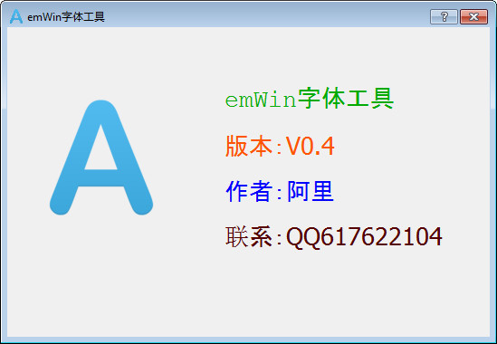
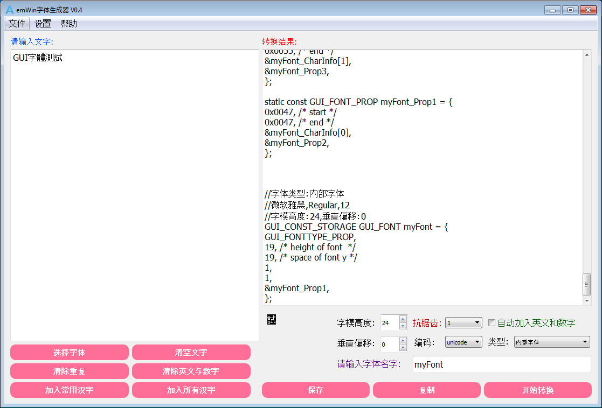
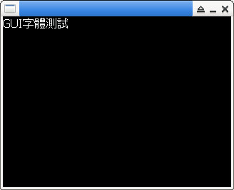

參考資訊：
https://www.cnblogs.com/armfly/p/15194282.html
http://dz.lfly.xyz/forum.php?mod=viewthread&tid=5
感謝阿里的工具


#include "GUI.h"
/*
*---------------------------------------------------------------
* emWin字体工具
*
* 注:支持unicode/GBK编码切换,支持抗锯齿
* 注:本字体文件由emWin字体工具 V0.4 生成
* 作者:阿里(qq:617622104)
*---------------------------------------------------------------
*/
#include "GUI.h"
/* G */
static const unsigned char myFont_0047[] = {
0x00,0x00, //...........
0x00,0x00, //...........
0x00,0x00, //...........
0x00,0x00, //...........
0x1f,0x80, //...@@@@@@..
0x60,0x40, //.@@......@.
0x40,0x00, //.@.........
0x80,0x00, //@..........
0x80,0x00, //@..........
0x80,0x00, //@..........
0x87,0xc0, //@....@@@@@.
0x80,0x40, //@........@.
0x80,0x40, //@........@.
0x40,0x40, //.@.......@.
0x60,0x40, //.@@......@.
0x1f,0x80, //...@@@@@@..
0x00,0x00, //...........
0x00,0x00, //...........
0x00,0x00, //...........
};
/* U */
static const unsigned char myFont_0055[] = {
0x00,0x00, //...........
0x00,0x00, //...........
0x00,0x00, //...........
0x00,0x00, //...........
0x80,0x40, //@........@.
0x80,0x40, //@........@.
0x80,0x40, //@........@.
0x80,0x40, //@........@.
0x80,0x40, //@........@.
0x80,0x40, //@........@.
0x80,0x40, //@........@.
0x80,0x40, //@........@.
0x80,0x40, //@........@.
0x80,0x40, //@........@.
0x40,0x80, //.@......@..
0x3f,0x00, //..@@@@@@...
0x00,0x00, //...........
0x00,0x00, //...........
0x00,0x00, //...........
};
/* I */
static const unsigned char myFont_0049[] = {
0x00, //......
0x00, //......
0x00, //......
0x00, //......
0x70, //.@@@..
0x20, //..@...
0x20, //..@...
0x20, //..@...
0x20, //..@...
0x20, //..@...
0x20, //..@...
0x20, //..@...
0x20, //..@...
0x20, //..@...
0x20, //..@...
0x70, //.@@@..
0x00, //......
0x00, //......
0x00, //......
};
/* 字 */
static const unsigned char myFont_5b57[] = {
0x00,0x00, //................
0x00,0x00, //................
0x01,0x00, //.......@........
0x01,0x00, //.......@........
0xff,0xfe, //@@@@@@@@@@@@@@@.
0x80,0x02, //@.............@.
0x80,0x02, //@.............@.
0x1f,0xf0, //...@@@@@@@@@....
0x00,0x20, //..........@.....
0x00,0x40, //.........@......
0x01,0x80, //.......@@.......
0x01,0x00, //.......@........
0xff,0xfe, //@@@@@@@@@@@@@@@.
0x01,0x00, //.......@........
0x01,0x00, //.......@........
0x01,0x00, //.......@........
0x07,0x00, //.....@@@........
0x00,0x00, //................
0x00,0x00, //................
};
/* 體 */
static const unsigned char myFont_9ad4[] = {
0x00,0x00, //................
0x00,0x00, //................
0x00,0x28, //..........@.@...
0x7c,0xfe, //.@@@@@..@@@@@@@.
0x44,0xaa, //.@...@..@.@.@.@.
0x5c,0xfe, //.@.@@@..@@@@@@@.
0x54,0xaa, //.@.@.@..@.@.@.@.
0xfe,0xfe, //@@@@@@@.@@@@@@@.
0x82,0x00, //@.....@.........
0x7c,0xfe, //.@@@@@..@@@@@@@.
0x44,0x00, //.@...@..........
0x7c,0xfe, //.@@@@@..@@@@@@@.
0x44,0x82, //.@...@..@.....@.
0x7c,0xfe, //.@@@@@..@@@@@@@.
0x44,0x44, //.@...@...@...@..
0x44,0x28, //.@...@....@.@...
0x4c,0xfe, //.@..@@..@@@@@@@.
0x00,0x00, //................
0x00,0x00, //................
};
/* 測 */
static const unsigned char myFont_6e2c[] = {
0x00,0x00, //................
0x00,0x00, //................
0x40,0x02, //.@............@.
0x27,0x92, //..@..@@@@..@..@.
0x14,0x92, //...@.@..@..@..@.
0x04,0x92, //.....@..@..@..@.
0x87,0x92, //@....@@@@..@..@.
0x44,0x92, //.@...@..@..@..@.
0x24,0x92, //..@..@..@..@..@.
0x07,0x92, //.....@@@@..@..@.
0x04,0x92, //.....@..@..@..@.
0x24,0x92, //..@..@..@..@..@.
0x24,0x92, //..@..@..@..@..@.
0x47,0x82, //.@...@@@@.....@.
0x40,0x02, //.@............@.
0x84,0x82, //@....@..@.....@.
0x88,0x4e, //@...@....@..@@@.
0x00,0x00, //................
0x00,0x00, //................
};
/* 試 */
static const unsigned char myFont_8a66[] = {
0x00,0x00, //................
0x00,0x00, //................
0x00,0x10, //...........@....
0x78,0x14, //.@@@@......@.@..
0x00,0x12, //...........@..@.
0xfc,0x10, //@@@@@@.....@....
0x03,0xfe, //......@@@@@@@@@.
0x78,0x10, //.@@@@......@....
0x00,0x10, //...........@....
0x79,0xd0, //.@@@@..@@@.@....
0x00,0x90, //........@..@....
0x00,0x88, //........@...@...
0x78,0x88, //.@@@@...@...@...
0x48,0x8a, //.@..@...@...@.@.
0x48,0xea, //.@..@...@@@.@.@.
0x4b,0x86, //.@..@.@@@....@@.
0x78,0x02, //.@@@@.........@.
0x00,0x00, //................
0x00,0x00, //................
};
static const GUI_CHARINFO myFont_CharInfo[] = {
{11,11,2,myFont_0047 }, /* 0:G */
{11,11,2,myFont_0055 }, /* 1:U */
{6,6,1,myFont_0049 }, /* 2:I */
{16,16,2,myFont_5b57 }, /* 3:字 */
{16,16,2,myFont_9ad4 }, /* 4:體 */
{16,16,2,myFont_6e2c }, /* 5:測 */
{16,16,2,myFont_8a66 }, /* 6:試 */
};
static const GUI_FONT_PROP myFont_Prop7 = {
0x8a66, /* start */
0x8a66, /* end */
&myFont_CharInfo[6],
(void*)0,
};
static const GUI_FONT_PROP myFont_Prop6 = {
0x6e2c, /* start */
0x6e2c, /* end */
&myFont_CharInfo[5],
&myFont_Prop7,
};
static const GUI_FONT_PROP myFont_Prop5 = {
0x9ad4, /* start */
0x9ad4, /* end */
&myFont_CharInfo[4],
&myFont_Prop6,
};
static const GUI_FONT_PROP myFont_Prop4 = {
0x5b57, /* start */
0x5b57, /* end */
&myFont_CharInfo[3],
&myFont_Prop5,
};
static const GUI_FONT_PROP myFont_Prop3 = {
0x0049, /* start */
0x0049, /* end */
&myFont_CharInfo[2],
&myFont_Prop4,
};
static const GUI_FONT_PROP myFont_Prop2 = {
0x0055, /* start */
0x0055, /* end */
&myFont_CharInfo[1],
&myFont_Prop3,
};
static const GUI_FONT_PROP myFont_Prop1 = {
0x0047, /* start */
0x0047, /* end */
&myFont_CharInfo[0],
&myFont_Prop2,
};
//字体类型：内部字体
//微软雅黑,Regular,12
//字模高度：24,垂直偏移：0
GUI_CONST_STORAGE GUI_FONT myFont = {
GUI_FONTTYPE_PROP,
19, /* height of font */
19, /* space of font y */
1,
1,
&myFont_Prop1,
};
int main(int argc, char *argv[])
{
GUI_Init();
GUI_SetColor(GUI_WHITE);
GUI_UC_SetEncodeUTF8();
GUI_SetFont(&myFont);
GUI_DispString("GUI字體測試");
GUI_Delay(3000);
return 0;
}
編譯、執行
$ gcc main.c -o main libucgui.a -IGUI_X -IGUI/Core -IGUI/Widget -IGUI/WM -lSDL $ ./main
